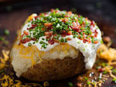

Baked potato

Description.
Baked potatoes are a simple and delicious side dish that can be customized with a wide range of toppings to suit your taste. They're perfect for any meal or as a standalone snack.
ingredients:
- Russet potatoes (as many as you need)
- Olive oil
- Salt
- Toppings of your choice (e.g., butter, sour cream, cheddar cheese, chives, bacon bits)
Steps:
- Preheat your over to 425°F (220°C).
- Scrub the potatoes thoroughly under cold water to remove any dirt. Pat them dry with a paper towel.
- Pierce each potato a few times with a fork to allow steam to escape during baking. This helps prevent the potatoes from bursting.
- Rub each potato with a thin layer of olive oil. This will help the skin become crispy during baking. Sprinkle with a pinch of salt.
- Place the potatoes directly on the oven rack or on a baking sheet. Bake for about 45 minutes to 1 hour, or until the potatoes are tender when pierced with a fork. The exact time may vary depending on the size of the potatoes.
- To check for doneness, squeeze the potato gently. It should yield to pressure, and the skin should be crispy.
- Once the potatoes are done, remove them from the oven and allow them to cool slightly for a few minutes.
- Slice open each baked potato and fluff the insides with a fork. Add your favorite toppings like butter, sour cream, cheddar cheese, chives, bacon bits, or any other toppings you prefer.
- Serve your baked potatoes hot, and enjoy!